3.4. Automated staging (POPS)
The recordings in this walkthorugh have been manually staged and we'll
use those stagings for all subsequent analyses). However, if manual
staging did not exist, rather than performing the previous SOAP
step one would instead need to generate stage labels per
epoch. Luna offers the POPS stager, which can be (re)trained on
various different montages and using different feature sets. Here we
focus on the default single central EEG adult model (called s2),
which is included in the aux/ folder of this walkthrough. For this
example, we'll only work with the s2 model, which was trained on
over 3000 central EEG leads from NSRR
recordings.
Single channel prediction
We can use the RUN-POPS Luna command to apply this model to our
sample. RUN-POPS currently assumes the s2 model by default,
so we only need to point to the folder we've just created with the s2
model files and tell it to use the EEG C4 channel.
(This model was trained on C3 and C4 channels.)
To clarify the presentation and evaluation of POPS, we'll apply it
to the original (v1) dataset rather than the manipulated v2
dataset. Also, the s2 model was trained on central EEGs with
contra-lateral mastoid rereferencing whereas the harm1.lst datasets
are now linked-mastoid referenced (although we don't expect this
to make any major differences in performance).
We'll use s.lst that points to the v1 data and
tell RUN-POPS to re-reference to contra-lateral mastoids (i.e. to use C4-A1):
luna s.lst -o out.db -s RUN-POPS sig=C4 ref=A1 path=work/data/aux/pops
This runs quite quickly: on this laptop, for all 20 individuals the above completed in 44 seconds, or 2.2 seconds per EDF, when based on this single EEG channel.
For each individual, the console log will report key summaries of the staging: e.g. a confusion matrix and kappa statistic:
running POPS
reading feature specification from ./pops/s2.ftr
396 level-1 features, 109 level-2 features
113 of 505 features selected in the final feature set
...
feature matrix: 951 rows (epochs) and 113 columns (features)
set 20 ( prop = 0.000186111) data points to missing
adding POPS annotations (pN1, pN2, pN3, pR, pW, p?)
kappa = 0.792083; 3-class kappa = 0.883651 (n = 951 epochs)
Confusion matrix:
Pred: W R N1 N2 N3 Tot
Obs: W 218 5 11 10 1 0.26
R 0 100 0 3 0 0.11
N1 8 13 15 62 1 0.1
N2 2 5 2 319 16 0.36
N3 0 0 0 7 153 0.17
Tot: 0.24 0.13 0.03 0.42 0.18 1.00
We can retrieve the summaries across all individuals:
destrat out.db +RUN-POPS -v K K3 ACC ACC3 -p 2
ID ACC ACC3 K K3
F01 0.86 0.90 0.80 0.80
F02 0.85 0.92 0.79 0.82
F03 0.80 0.90 0.74 0.79
F04 0.79 0.87 0.73 0.78
F05 0.76 0.91 0.68 0.83
F06 0.82 0.91 0.73 0.78
F07 0.71 0.83 0.60 0.73
F08 0.84 0.93 0.78 0.86
F09 0.84 0.94 0.75 0.87
F10 0.87 0.96 0.81 0.93
M01 0.76 0.83 0.59 0.50
M02 0.81 0.91 0.68 0.80
M03 0.83 0.90 0.77 0.80
M04 0.85 0.94 0.79 0.88
M05 0.84 0.89 0.71 0.70
M06 0.88 0.93 0.82 0.88
M07 0.82 0.86 0.74 0.75
M08 0.85 0.92 0.79 0.84
M09 0.77 0.86 0.66 0.56
M10 0.73 0.86 0.62 0.70
Overall, performance is good: the median (mean) 5-class kappa is 0.74 (0.73). The median (mean) 3-class kappa is 0.80 (0.78).
Kappas and automated staging
Remember that the primary use case of automated staging will be when prior (manual) staging data do not exist. As such, Luna will naturally not be able to output any kappa/accuracy statistics. When manual staging doesn't exist, it can be useful to visually review the hypnograms and hypnodensity plots generated. In particular, very fragemented hypnograms, or cases of low confidence (i.e. the maximum posterior probabilities tend to be relatively low across many epochs, i.e. rather than all near 1.0) are signs that the automated staging is less likely to be accurate. In these circumstances it can be worth checking the original signal data (i.e. are the signals massively corrupt), ensuring that excess wake/artifact periods have been trimmed (i.e. if getting data from 24 hour recordings), and/or using more than one stager. At least for POPS, most errors will be in the classification of REM and N1 - confident assignments of NREM (N2 or N3) sleep are likely to be highly specific.
Multiple channels
Although all features in this model are based on a single EEG channel, you can still apply it (sequentially) to muliple, broadly comparable channels. Luna does this automatically and compiles the results across channels, to provide a single set of predictions. By default, Luna reports the mean of the posterior probabilities, each weighted by the confidence for that channel.
Given we have hd-EEG, we'll apply the same model to six channels per individual: in addition to C4, we will add the adjacent FC4 and CP4 channels, as well as the corresponding contra-lateral left hemisphere channels:
luna s.lst -o out.db \
-s ' RUN-POPS sig=C4,CP4,FC4,C3,CP3,FC3 ref=A1,A1,A1,A2,A2,A2 path=work/data/aux/pops args="mean" '
Here sig and ref take a vector of channels, where the
ith sig is referenced against the ith
ref. This takes a little longer (now 10 seconds per study).
Is it worth the extra effort? We can review the kappa statistics as
before:
destrat out.db +RUN-POPS -v K K3 ACC ACC3 -p 2
ID ACC ACC3 K K3
F01 0.86 0.91 0.82 0.83
F02 0.85 0.91 0.78 0.81
F03 0.81 0.90 0.74 0.80
F04 0.83 0.91 0.78 0.85
F05 0.77 0.91 0.69 0.83
F06 0.85 0.92 0.78 0.79
F07 0.76 0.87 0.66 0.78
F08 0.83 0.92 0.77 0.84
F09 0.85 0.93 0.75 0.85
F10 0.87 0.96 0.81 0.92
M01 0.79 0.85 0.62 0.54
M02 0.83 0.91 0.71 0.80
M03 0.81 0.88 0.74 0.78
M04 0.85 0.95 0.80 0.90
M05 0.85 0.90 0.72 0.72
M06 0.89 0.94 0.84 0.89
M07 0.84 0.88 0.77 0.78
M08 0.87 0.93 0.80 0.87
M09 0.82 0.90 0.73 0.71
M10 0.75 0.87 0.64 0.72
Preliminary analyses based on these samples would suggest so: the
average kappa for this six-channel application of the same s2
model is significantly higher than than kappa from the single-channel C4 model (paired
t-test p = 0.002; K = 0.75 vs 0.73).
Reviewing outputs
We can extract epoch-level predictions from the previous multi-channel run:
destrat out.db +RUN-POPS -r E > o.1
In R:
library(luna)
d <- read.table( "o.1" , header=T, stringsAsFactors=F)
ids <- unique( d$ID )
We can generate plots for each individual, e.g. via a simple loop:
for (id in ids) {
par(mfcol=c(3,1), mar=c(3,3,0.5,0.5) )
dd <- d[ d$ID == id , ]
lhypno( dd$PRIOR )
lhypno( dd$PRED )
lpp( dd )
}
The plots generated are shown below. For each individual, the top hypnogram shows the observed, manual staging; the lower hypnogram shows the POPS-predicted (most likely) staging; the bottom plot shows the posterior probabilities from POPS.
From a cursory visual inspection, these predictions look highly consistent with the manual staging for these 20 recordings.
F01
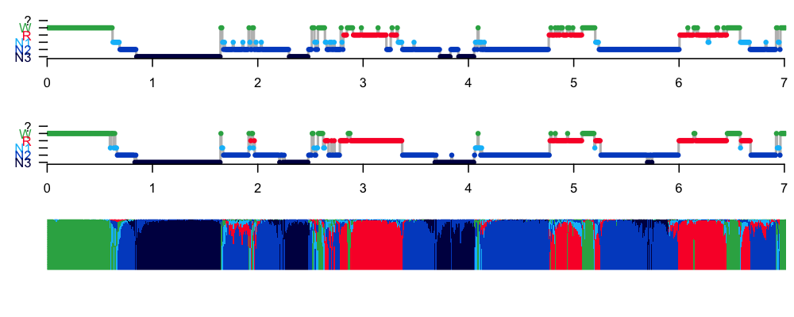
F02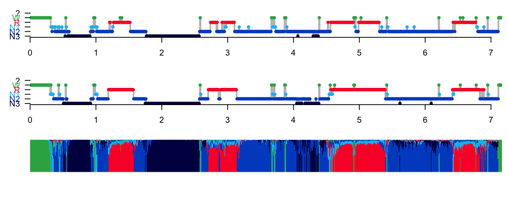
F03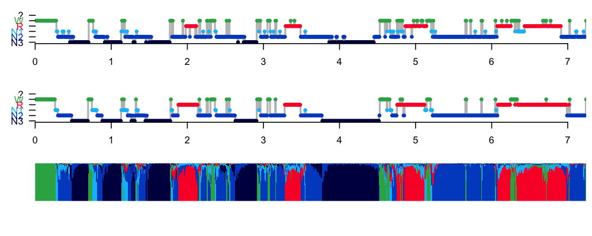
F04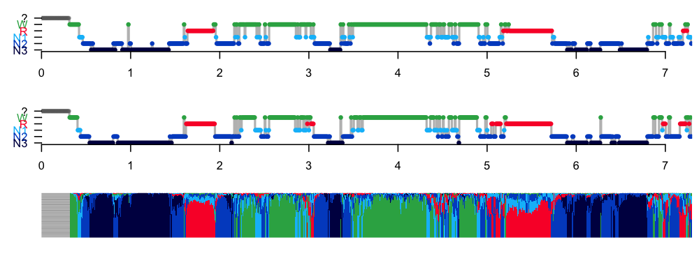
F05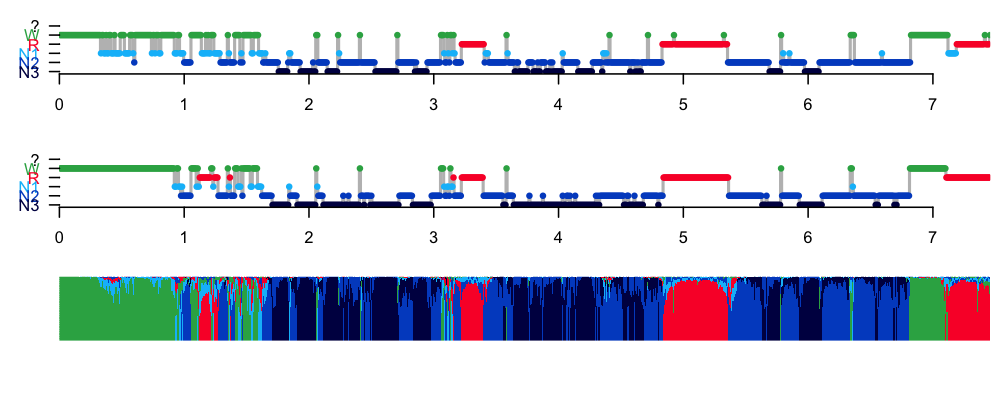
F06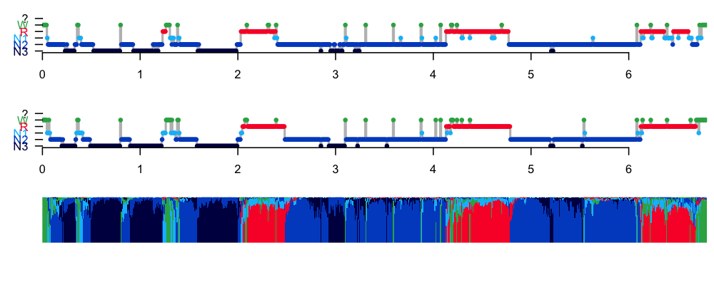
F07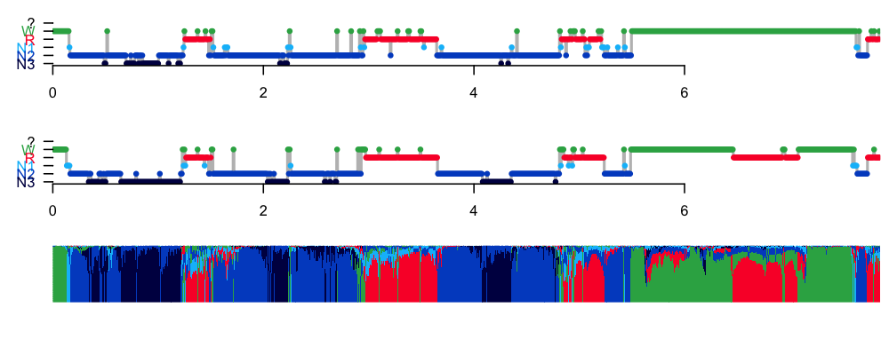
F08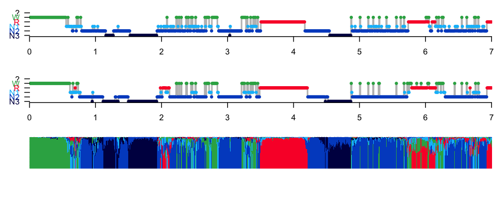
F09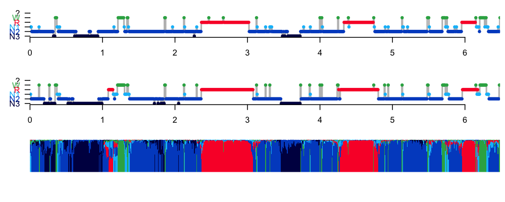
F10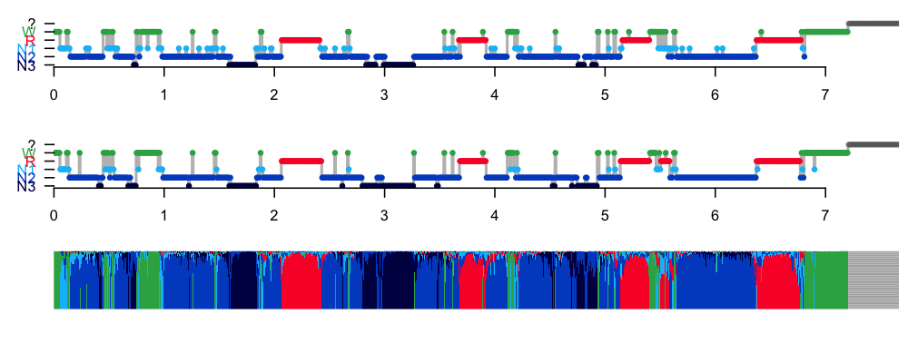
M01
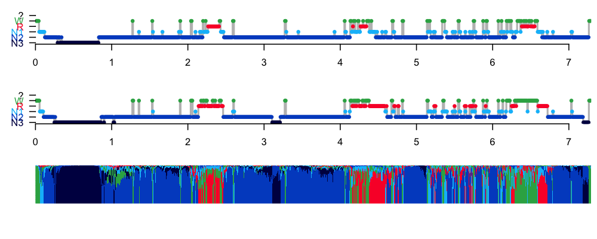
M02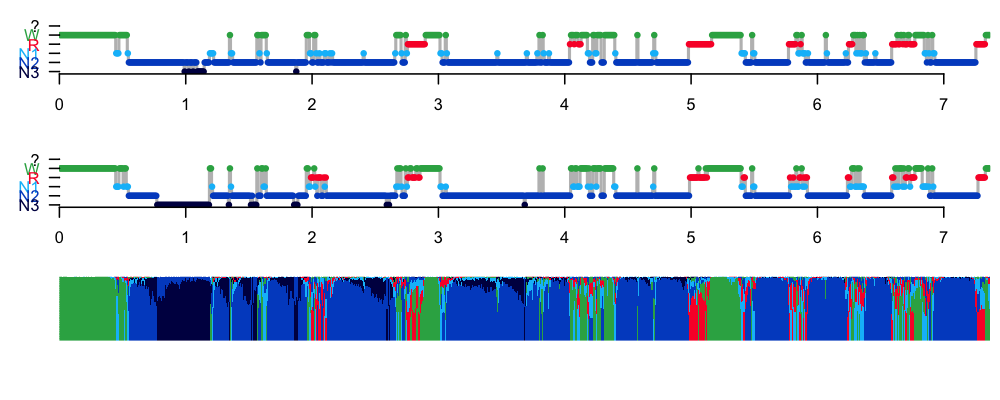
M03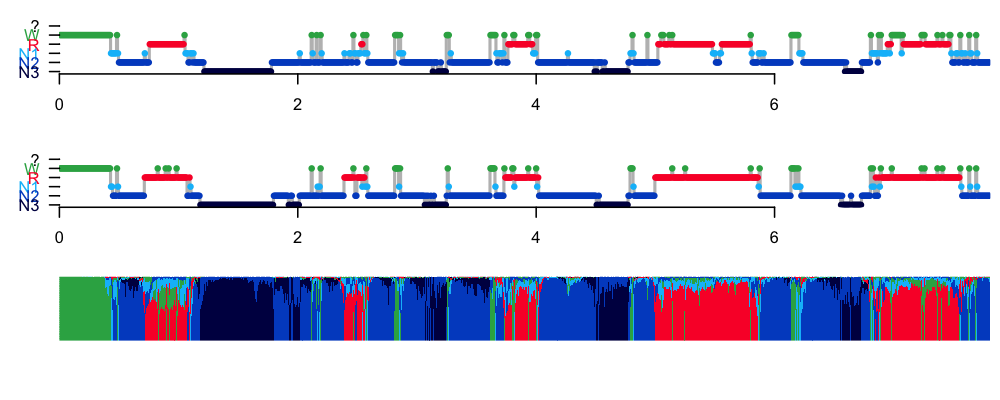
M04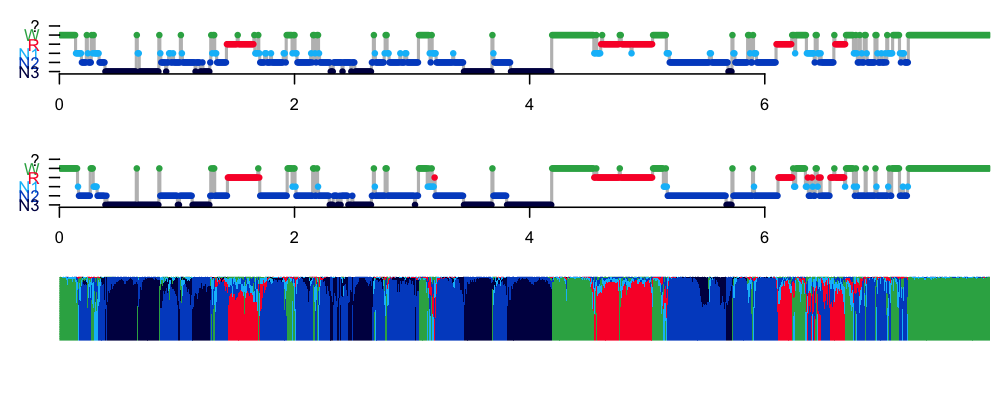
M05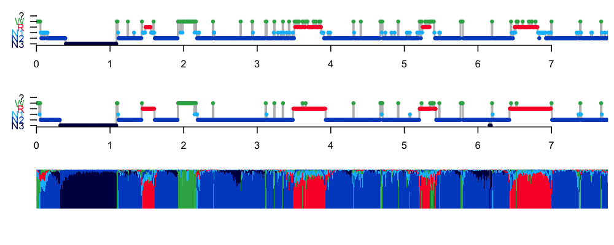
M06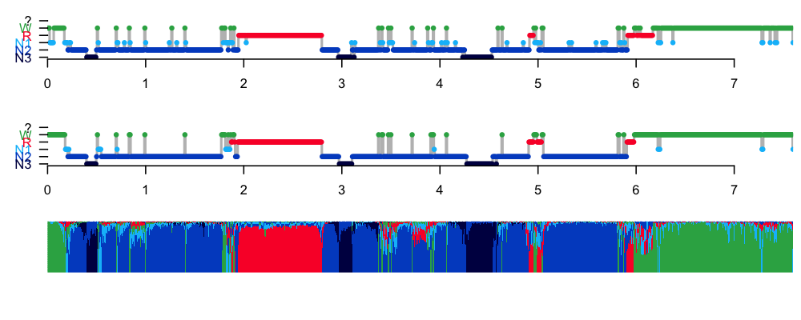
M07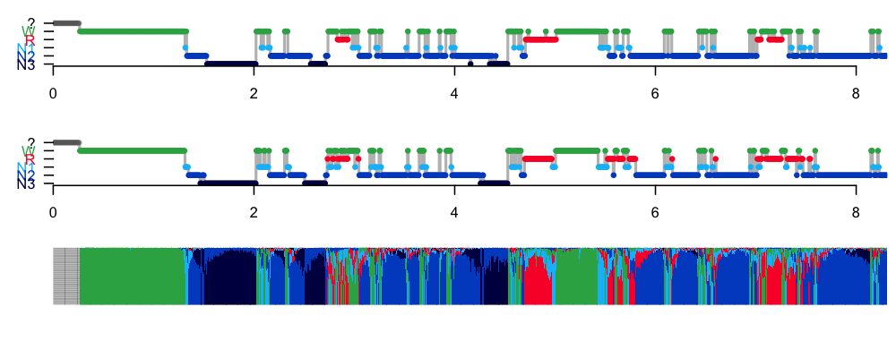
M08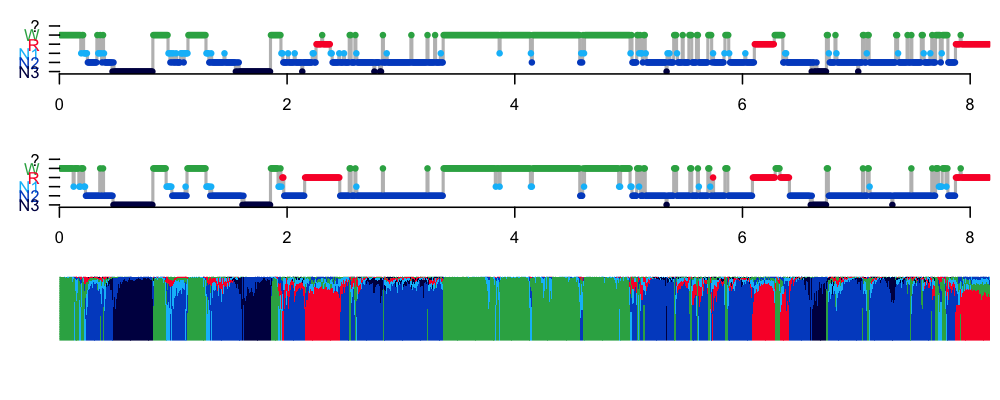
M09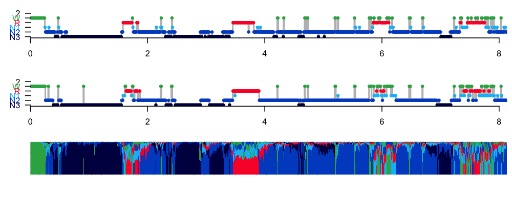
M10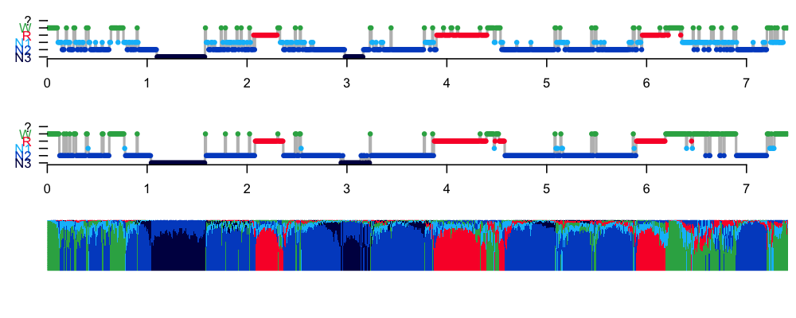
POPS, by default, adds a set of annotations to the attached EDF, with
the labels pN1, pN2, pN3, pR and pW in this case. One could
write those out by adding a WRITE-ANNOTS command after RUN-POPS,
if one wanted to save and use those stagings downstream.
Summary
If it had been necessary, applying POPS to this set of individuals instead of manual staging would have been successful, based on the high kappa statistics and the review of hypnograms. Visual inspection of manually and automatically staged hypnograms shows a fundamental alignment across all 20 individuals.
We'll now move on to the final step of QC.